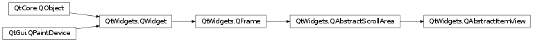

QAbstractItemView¶
Inherited by: QHeaderView, QTableView, QTableWidget, QColumnView, QTreeView, QTreeWidget, QHelpContentWidget, QListView, QListWidget, QUndoView, QHelpIndexWidget
Synopsis¶
Functions¶
- def
alternatingRowColors() - def
autoScrollMargin() - def
closePersistentEditor(index) - def
currentIndex() - def
defaultDropAction() - def
dirtyRegionOffset() - def
doAutoScroll() - def
dragDropMode() - def
dragDropOverwriteMode() - def
dragEnabled() - def
dropIndicatorPosition() - def
editTriggers() - def
executeDelayedItemsLayout() - def
hasAutoScroll() - def
horizontalScrollMode() - def
horizontalStepsPerItem() - def
iconSize() - def
indexWidget(index) - def
isPersistentEditorOpen(index) - def
itemDelegate() - def
itemDelegate(index) - def
itemDelegateForColumn(column) - def
itemDelegateForRow(row) - def
model() - def
openPersistentEditor(index) - def
resetHorizontalScrollMode() - def
resetVerticalScrollMode() - def
rootIndex() - def
scheduleDelayedItemsLayout() - def
scrollDirtyRegion(dx, dy) - def
selectionBehavior() - def
selectionMode() - def
selectionModel() - def
setAlternatingRowColors(enable) - def
setAutoScroll(enable) - def
setAutoScrollMargin(margin) - def
setDefaultDropAction(dropAction) - def
setDirtyRegion(region) - def
setDragDropMode(behavior) - def
setDragDropOverwriteMode(overwrite) - def
setDragEnabled(enable) - def
setDropIndicatorShown(enable) - def
setEditTriggers(triggers) - def
setHorizontalScrollMode(mode) - def
setHorizontalStepsPerItem(steps) - def
setIconSize(size) - def
setIndexWidget(index, widget) - def
setItemDelegate(delegate) - def
setItemDelegateForColumn(column, delegate) - def
setItemDelegateForRow(row, delegate) - def
setSelectionBehavior(behavior) - def
setSelectionMode(mode) - def
setState(state) - def
setTabKeyNavigation(enable) - def
setTextElideMode(mode) - def
setVerticalScrollMode(mode) - def
setVerticalStepsPerItem(steps) - def
showDropIndicator() - def
sizeHintForIndex(index) - def
startAutoScroll() - def
state() - def
stopAutoScroll() - def
tabKeyNavigation() - def
textElideMode() - def
verticalScrollMode() - def
verticalStepsPerItem()
Virtual functions¶
- def
closeEditor(editor, hint) - def
commitData(editor) - def
currentChanged(current, previous) - def
dataChanged(topLeft, bottomRight[, roles=list()]) - def
doItemsLayout() - def
edit(index, trigger, event) - def
editorDestroyed(editor) - def
horizontalOffset() - def
horizontalScrollbarAction(action) - def
horizontalScrollbarValueChanged(value) - def
indexAt(point) - def
isIndexHidden(index) - def
keyboardSearch(search) - def
moveCursor(cursorAction, modifiers) - def
reset() - def
rowsAboutToBeRemoved(parent, start, end) - def
rowsInserted(parent, start, end) - def
scrollTo(index[, hint=EnsureVisible]) - def
selectAll() - def
selectedIndexes() - def
selectionChanged(selected, deselected) - def
selectionCommand(index[, event=nullptr]) - def
setModel(model) - def
setRootIndex(index) - def
setSelection(rect, command) - def
setSelectionModel(selectionModel) - def
sizeHintForColumn(column) - def
sizeHintForRow(row) - def
startDrag(supportedActions) - def
updateEditorData() - def
updateEditorGeometries() - def
updateGeometries() - def
verticalOffset() - def
verticalScrollbarAction(action) - def
verticalScrollbarValueChanged(value) - def
viewOptions() - def
visualRect(index) - def
visualRegionForSelection(selection)
Slots¶
- def
clearSelection() - def
edit(index) - def
scrollToBottom() - def
scrollToTop() - def
setCurrentIndex(index) - def
update(index)
Signals¶
- def
activated(index) - def
clicked(index) - def
doubleClicked(index) - def
entered(index) - def
iconSizeChanged(size) - def
pressed(index) - def
viewportEntered()
Detailed Description¶
The
PySide2.QtWidgets.QAbstractItemViewclass provides the basic functionality for item view classes.
PySide2.QtWidgets.QAbstractItemViewclass is the base class for every standard view that uses aPySide2.QtCore.QAbstractItemModel.PySide2.QtWidgets.QAbstractItemViewis an abstract class and cannot itself be instantiated. It provides a standard interface for interoperating with models through the signals and slots mechanism, enabling subclasses to be kept up-to-date with changes to their models. This class provides standard support for keyboard and mouse navigation, viewport scrolling, item editing, and selections. The keyboard navigation implements this functionality:
Keys Functionality Arrow keys Changes the current item and selects it. Ctrl+Arrow keys Changes the current item but does not select it. Shift+Arrow keys Changes the current item and selects it. The previously selected item(s) is not deselected. Ctr+Space Toggles selection of the current item. Tab/Backtab Changes the current item to the next/previous item. Home/End Selects the first/last item in the model. Page up/Page down Scrolls the rows shown up/down by the number of visible rows in the view. Ctrl+A Selects all items in the model. Note that the above table assumes that the
selection modeallows the operations. For instance, you cannot select items if the selection mode isQAbstractItemView.NoSelection.The
PySide2.QtWidgets.QAbstractItemViewclass is one of the Model/View Classes and is part of Qt’s model/view framework .The view classes that inherit
PySide2.QtWidgets.QAbstractItemViewonly need to implement their own view-specific functionality, such as drawing items, returning the geometry of items, finding items, etc.
PySide2.QtWidgets.QAbstractItemViewprovides common slots such asPySide2.QtWidgets.QAbstractItemView.edit()andPySide2.QtWidgets.QAbstractItemView.setCurrentIndex(). Many protected slots are also provided, includingPySide2.QtWidgets.QAbstractItemView.dataChanged(),PySide2.QtWidgets.QAbstractItemView.rowsInserted(),PySide2.QtWidgets.QAbstractItemView.rowsAboutToBeRemoved(),PySide2.QtWidgets.QAbstractItemView.selectionChanged(), andPySide2.QtWidgets.QAbstractItemView.currentChanged().The root item is returned by
PySide2.QtWidgets.QAbstractItemView.rootIndex(), and the current item byPySide2.QtWidgets.QAbstractItemView.currentIndex(). To make sure that an item is visible usePySide2.QtWidgets.QAbstractItemView.scrollTo().Some of
PySide2.QtWidgets.QAbstractItemView‘s functions are concerned with scrolling, for examplePySide2.QtWidgets.QAbstractItemView.setHorizontalScrollMode()andPySide2.QtWidgets.QAbstractItemView.setVerticalScrollMode(). To set the range of the scroll bars, you can, for example, reimplement the view’sPySide2.QtWidgets.QAbstractItemView.resizeEvent()function:def resizeEvent(self, event): horizontalScrollBar().setRange(0, realWidth - width()) ...Note that the range is not updated until the widget is shown.
Several other functions are concerned with selection control; for example
PySide2.QtWidgets.QAbstractItemView.setSelectionMode(), andPySide2.QtWidgets.QAbstractItemView.setSelectionBehavior(). This class provides a default selection model to work with (PySide2.QtWidgets.QAbstractItemView.selectionModel()), but this can be replaced by usingPySide2.QtWidgets.QAbstractItemView.setSelectionModel()with an instance ofPySide2.QtCore.QItemSelectionModel.For complete control over the display and editing of items you can specify a delegate with
PySide2.QtWidgets.QAbstractItemView.setItemDelegate().
PySide2.QtWidgets.QAbstractItemViewprovides a lot of protected functions. Some are concerned with editing, for example,PySide2.QtWidgets.QAbstractItemView.edit(), andPySide2.QtWidgets.QAbstractItemView.commitData(), whilst others are keyboard and mouse event handlers.Note
If you inherit
PySide2.QtWidgets.QAbstractItemViewand intend to update the contents of the viewport, you should use viewport->PySide2.QtWidgets.QAbstractItemView.update()instead ofPySide2.QtWidgets.QWidget.update()as all painting operations take place on the viewport.
-
class
PySide2.QtWidgets.QAbstractItemView([parent=nullptr])¶ Parameters: parent – PySide2.QtWidgets.QWidgetConstructs an abstract item view with the given
parent.
-
PySide2.QtWidgets.QAbstractItemView.SelectionMode¶ This enum indicates how the view responds to user selections:
Constant Description QAbstractItemView.SingleSelection When the user selects an item, any already-selected item becomes unselected. It is possible for the user to deselect the selected item. QAbstractItemView.ContiguousSelection When the user selects an item in the usual way, the selection is cleared and the new item selected. However, if the user presses the Shift key while clicking on an item, all items between the current item and the clicked item are selected or unselected, depending on the state of the clicked item. QAbstractItemView.ExtendedSelection When the user selects an item in the usual way, the selection is cleared and the new item selected. However, if the user presses the Ctrl key when clicking on an item, the clicked item gets toggled and all other items are left untouched. If the user presses the Shift key while clicking on an item, all items between the current item and the clicked item are selected or unselected, depending on the state of the clicked item. Multiple items can be selected by dragging the mouse over them. QAbstractItemView.MultiSelection When the user selects an item in the usual way, the selection status of that item is toggled and the other items are left alone. Multiple items can be toggled by dragging the mouse over them. QAbstractItemView.NoSelection Items cannot be selected. The most commonly used modes are and .
-
PySide2.QtWidgets.QAbstractItemView.SelectionBehavior¶ Constant Description QAbstractItemView.SelectItems Selecting single items. QAbstractItemView.SelectRows Selecting only rows. QAbstractItemView.SelectColumns Selecting only columns.
-
PySide2.QtWidgets.QAbstractItemView.ScrollHint¶ Constant Description QAbstractItemView.EnsureVisible Scroll to ensure that the item is visible. QAbstractItemView.PositionAtTop Scroll to position the item at the top of the viewport. QAbstractItemView.PositionAtBottom Scroll to position the item at the bottom of the viewport. QAbstractItemView.PositionAtCenter Scroll to position the item at the center of the viewport.
-
PySide2.QtWidgets.QAbstractItemView.EditTrigger¶ This enum describes actions which will initiate item editing.
Constant Description QAbstractItemView.NoEditTriggers No editing possible. QAbstractItemView.CurrentChanged Editing start whenever current item changes. QAbstractItemView.DoubleClicked Editing starts when an item is double clicked. QAbstractItemView.SelectedClicked Editing starts when clicking on an already selected item. QAbstractItemView.EditKeyPressed Editing starts when the platform edit key has been pressed over an item. QAbstractItemView.AnyKeyPressed Editing starts when any key is pressed over an item. QAbstractItemView.AllEditTriggers Editing starts for all above actions.
-
PySide2.QtWidgets.QAbstractItemView.ScrollMode¶ Describes how the scrollbar should behave. When setting the scroll mode to the single step size will adjust automatically unless it was set explicitly using
PySide2.QtWidgets.QAbstractSlider.setSingleStep(). The automatic adjustment can be restored by setting the single step size to -1.Constant Description QAbstractItemView.ScrollPerItem The view will scroll the contents one item at a time. QAbstractItemView.ScrollPerPixel The view will scroll the contents one pixel at a time.
-
PySide2.QtWidgets.QAbstractItemView.DragDropMode¶ Describes the various drag and drop events the view can act upon. By default the view does not support dragging or dropping (
NoDragDrop).Constant Description QAbstractItemView.NoDragDrop Does not support dragging or dropping. QAbstractItemView.DragOnly The view supports dragging of its own items QAbstractItemView.DropOnly The view accepts drops QAbstractItemView.DragDrop The view supports both dragging and dropping QAbstractItemView.InternalMove The view accepts move (not copy) operations only from itself. Note that the model used needs to provide support for drag and drop operations.
-
PySide2.QtWidgets.QAbstractItemView.CursorAction¶ This enum describes the different ways to navigate between items,
Constant Description QAbstractItemView.MoveUp Move to the item above the current item. QAbstractItemView.MoveDown Move to the item below the current item. QAbstractItemView.MoveLeft Move to the item left of the current item. QAbstractItemView.MoveRight Move to the item right of the current item. QAbstractItemView.MoveHome Move to the top-left corner item. QAbstractItemView.MoveEnd Move to the bottom-right corner item. QAbstractItemView.MovePageUp Move one page up above the current item. QAbstractItemView.MovePageDown Move one page down below the current item. QAbstractItemView.MoveNext Move to the item after the current item. QAbstractItemView.MovePrevious Move to the item before the current item.
-
PySide2.QtWidgets.QAbstractItemView.State¶ Describes the different states the view can be in. This is usually only interesting when reimplementing your own view.
Constant Description QAbstractItemView.NoState The is the default state. QAbstractItemView.DraggingState The user is dragging items. QAbstractItemView.DragSelectingState The user is selecting items. QAbstractItemView.EditingState The user is editing an item in a widget editor. QAbstractItemView.ExpandingState The user is opening a branch of items. QAbstractItemView.CollapsingState The user is closing a branch of items. QAbstractItemView.AnimatingState The item view is performing an animation.
-
PySide2.QtWidgets.QAbstractItemView.DropIndicatorPosition¶ This enum indicates the position of the drop indicator in relation to the index at the current mouse position:
Constant Description QAbstractItemView.OnItem The item will be dropped on the index. QAbstractItemView.AboveItem The item will be dropped above the index. QAbstractItemView.BelowItem The item will be dropped below the index. QAbstractItemView.OnViewport The item will be dropped onto a region of the viewport with no items. The way each view handles items dropped onto the viewport depends on the behavior of the underlying model in use.
-
PySide2.QtWidgets.QAbstractItemView.activated(index)¶ Parameters: index – PySide2.QtCore.QModelIndex
-
PySide2.QtWidgets.QAbstractItemView.alternatingRowColors()¶ Return type: PySide2.QtCore.bool
-
PySide2.QtWidgets.QAbstractItemView.autoScrollMargin()¶ Return type: PySide2.QtCore.int
-
PySide2.QtWidgets.QAbstractItemView.clearSelection()¶ Deselects all selected items. The current index will not be changed.
-
PySide2.QtWidgets.QAbstractItemView.clicked(index)¶ Parameters: index – PySide2.QtCore.QModelIndex
-
PySide2.QtWidgets.QAbstractItemView.closeEditor(editor, hint)¶ Parameters: Closes the given
editor, and releases it. Thehintis used to specify how the view should respond to the end of the editing operation. For example, the hint may indicate that the next item in the view should be opened for editing.
-
PySide2.QtWidgets.QAbstractItemView.closePersistentEditor(index)¶ Parameters: index – PySide2.QtCore.QModelIndexCloses the persistent editor for the item at the given
index.
-
PySide2.QtWidgets.QAbstractItemView.commitData(editor)¶ Parameters: editor – PySide2.QtWidgets.QWidgetCommit the data in the
editorto the model.
-
PySide2.QtWidgets.QAbstractItemView.currentChanged(current, previous)¶ Parameters: - current –
PySide2.QtCore.QModelIndex - previous –
PySide2.QtCore.QModelIndex
This slot is called when a new item becomes the current item. The previous current item is specified by the
previousindex, and the new item by thecurrentindex.If you want to know about changes to items see the
PySide2.QtWidgets.QAbstractItemView.dataChanged()signal.- current –
-
PySide2.QtWidgets.QAbstractItemView.currentIndex()¶ Return type: PySide2.QtCore.QModelIndexReturns the model index of the current item.
-
PySide2.QtWidgets.QAbstractItemView.dataChanged(topLeft, bottomRight[, roles=list()])¶ Parameters: - topLeft –
PySide2.QtCore.QModelIndex - bottomRight –
PySide2.QtCore.QModelIndex - roles –
This slot is called when items with the given
rolesare changed in the model. The changed items are those fromtopLefttobottomRightinclusive. If just one item is changedtopLeft==bottomRight.The
roleswhich have been changed can either be an empty container (meaning everything has changed), or a non-empty container with the subset of roles which have changed.- topLeft –
-
PySide2.QtWidgets.QAbstractItemView.defaultDropAction()¶ Return type: PySide2.QtCore.Qt.DropAction
-
PySide2.QtWidgets.QAbstractItemView.dirtyRegionOffset()¶ Return type: PySide2.QtCore.QPointReturns the offset of the dirty regions in the view.
If you use
PySide2.QtWidgets.QAbstractItemView.scrollDirtyRegion()and implement aPySide2.QtWidgets.QAbstractScrollArea.paintEvent()in a subclass ofPySide2.QtWidgets.QAbstractItemView, you should translate the area given by the paint event with the offset returned from this function.
-
PySide2.QtWidgets.QAbstractItemView.doAutoScroll()¶
-
PySide2.QtWidgets.QAbstractItemView.doItemsLayout()¶ This function is intended to lay out the items in the view. The default implementation just calls
PySide2.QtWidgets.QAbstractItemView.updateGeometries()and updates the viewport.
-
PySide2.QtWidgets.QAbstractItemView.doubleClicked(index)¶ Parameters: index – PySide2.QtCore.QModelIndex
-
PySide2.QtWidgets.QAbstractItemView.dragDropMode()¶ Return type: PySide2.QtWidgets.QAbstractItemView.DragDropMode
-
PySide2.QtWidgets.QAbstractItemView.dragDropOverwriteMode()¶ Return type: PySide2.QtCore.bool
-
PySide2.QtWidgets.QAbstractItemView.dragEnabled()¶ Return type: PySide2.QtCore.bool
-
PySide2.QtWidgets.QAbstractItemView.dropIndicatorPosition()¶ Return type: PySide2.QtWidgets.QAbstractItemView.DropIndicatorPositionReturns the position of the drop indicator in relation to the closest item.
-
PySide2.QtWidgets.QAbstractItemView.edit(index)¶ Parameters: index – PySide2.QtCore.QModelIndexStarts editing the item corresponding to the given
indexif it is editable.Note that this function does not change the current index. Since the current index defines the next and previous items to edit, users may find that keyboard navigation does not work as expected. To provide consistent navigation behavior, call
PySide2.QtWidgets.QAbstractItemView.setCurrentIndex()before this function with the same model index.See also
QModelIndex.flags()
-
PySide2.QtWidgets.QAbstractItemView.edit(index, trigger, event) Parameters: - index –
PySide2.QtCore.QModelIndex - trigger –
PySide2.QtWidgets.QAbstractItemView.EditTrigger - event –
PySide2.QtCore.QEvent
Return type: PySide2.QtCore.boolStarts editing the item at
index, creating an editor if necessary, and returnstrueif the view’sQAbstractItemView.Stateis nowEditingState; otherwise returnsfalse.The action that caused the editing process is described by
trigger, and the associated event is specified byevent.Editing can be forced by specifying the
triggerto beQAbstractItemView.AllEditTriggers.- index –
-
PySide2.QtWidgets.QAbstractItemView.editTriggers()¶ Return type: PySide2.QtWidgets.QAbstractItemView.EditTriggers
-
PySide2.QtWidgets.QAbstractItemView.editorDestroyed(editor)¶ Parameters: editor – PySide2.QtCore.QObjectThis function is called when the given
editorhas been destroyed.
-
PySide2.QtWidgets.QAbstractItemView.entered(index)¶ Parameters: index – PySide2.QtCore.QModelIndex
-
PySide2.QtWidgets.QAbstractItemView.executeDelayedItemsLayout()¶ Executes the scheduled layouts without waiting for the event processing to begin.
-
PySide2.QtWidgets.QAbstractItemView.hasAutoScroll()¶ Return type: PySide2.QtCore.bool
-
PySide2.QtWidgets.QAbstractItemView.horizontalOffset()¶ Return type: PySide2.QtCore.intReturns the horizontal offset of the view.
In the base class this is a pure virtual function.
-
PySide2.QtWidgets.QAbstractItemView.horizontalScrollMode()¶ Return type: PySide2.QtWidgets.QAbstractItemView.ScrollMode
-
PySide2.QtWidgets.QAbstractItemView.horizontalScrollbarAction(action)¶ Parameters: action – PySide2.QtCore.int
-
PySide2.QtWidgets.QAbstractItemView.horizontalScrollbarValueChanged(value)¶ Parameters: value – PySide2.QtCore.int
-
PySide2.QtWidgets.QAbstractItemView.horizontalStepsPerItem()¶ Return type: PySide2.QtCore.intReturns the horizontal scroll bar’s steps per item.
-
PySide2.QtWidgets.QAbstractItemView.iconSize()¶ Return type: PySide2.QtCore.QSize
-
PySide2.QtWidgets.QAbstractItemView.iconSizeChanged(size)¶ Parameters: size – PySide2.QtCore.QSize
-
PySide2.QtWidgets.QAbstractItemView.indexAt(point)¶ Parameters: point – PySide2.QtCore.QPointReturn type: PySide2.QtCore.QModelIndexReturns the model index of the item at the viewport coordinates
point.In the base class this is a pure virtual function.
-
PySide2.QtWidgets.QAbstractItemView.indexWidget(index)¶ Parameters: index – PySide2.QtCore.QModelIndexReturn type: PySide2.QtWidgets.QWidgetReturns the widget for the item at the given
index.
-
PySide2.QtWidgets.QAbstractItemView.isIndexHidden(index)¶ Parameters: index – PySide2.QtCore.QModelIndexReturn type: PySide2.QtCore.boolReturns
trueif the item referred to by the givenindexis hidden in the view, otherwise returnsfalse.Hiding is a view specific feature. For example in TableView a column can be marked as hidden or a row in the TreeView.
In the base class this is a pure virtual function.
-
PySide2.QtWidgets.QAbstractItemView.isPersistentEditorOpen(index)¶ Parameters: index – PySide2.QtCore.QModelIndexReturn type: PySide2.QtCore.boolReturns whether a persistent editor is open for the item at index
index.
-
PySide2.QtWidgets.QAbstractItemView.itemDelegate(index)¶ Parameters: index – PySide2.QtCore.QModelIndexReturn type: PySide2.QtWidgets.QAbstractItemDelegateReturns the item delegate used by this view and model for the given
index.
-
PySide2.QtWidgets.QAbstractItemView.itemDelegate() Return type: PySide2.QtWidgets.QAbstractItemDelegateReturns the item delegate used by this view and model. This is either one set with
PySide2.QtWidgets.QAbstractItemView.setItemDelegate(), or the default one.
-
PySide2.QtWidgets.QAbstractItemView.itemDelegateForColumn(column)¶ Parameters: column – PySide2.QtCore.intReturn type: PySide2.QtWidgets.QAbstractItemDelegateReturns the item delegate used by this view and model for the given
column. You can callPySide2.QtWidgets.QAbstractItemView.itemDelegate()to get a pointer to the current delegate for a given index.
-
PySide2.QtWidgets.QAbstractItemView.itemDelegateForRow(row)¶ Parameters: row – PySide2.QtCore.intReturn type: PySide2.QtWidgets.QAbstractItemDelegateReturns the item delegate used by this view and model for the given
row, or 0 if no delegate has been assigned. You can callPySide2.QtWidgets.QAbstractItemView.itemDelegate()to get a pointer to the current delegate for a given index.
-
PySide2.QtWidgets.QAbstractItemView.keyboardSearch(search)¶ Parameters: search – unicode Moves to and selects the item best matching the string
search. If no item is found nothing happens.In the default implementation, the search is reset if
searchis empty, or the time interval since the last search has exceededQApplication.keyboardInputInterval().
-
PySide2.QtWidgets.QAbstractItemView.model()¶ Return type: PySide2.QtCore.QAbstractItemModelReturns the model that this view is presenting.
-
PySide2.QtWidgets.QAbstractItemView.moveCursor(cursorAction, modifiers)¶ Parameters: - cursorAction –
PySide2.QtWidgets.QAbstractItemView.CursorAction - modifiers –
PySide2.QtCore.Qt.KeyboardModifiers
Return type: Returns a
PySide2.QtCore.QModelIndexobject pointing to the next object in the view, based on the givencursorActionand keyboard modifiers specified bymodifiers.In the base class this is a pure virtual function.
- cursorAction –
-
PySide2.QtWidgets.QAbstractItemView.openPersistentEditor(index)¶ Parameters: index – PySide2.QtCore.QModelIndexOpens a persistent editor on the item at the given
index. If no editor exists, the delegate will create a new editor.
-
PySide2.QtWidgets.QAbstractItemView.pressed(index)¶ Parameters: index – PySide2.QtCore.QModelIndex
-
PySide2.QtWidgets.QAbstractItemView.reset()¶ Reset the internal state of the view.
Warning
This function will reset open editors, scroll bar positions, selections, etc. Existing changes will not be committed. If you would like to save your changes when resetting the view, you can reimplement this function, commit your changes, and then call the superclass’ implementation.
-
PySide2.QtWidgets.QAbstractItemView.resetHorizontalScrollMode()¶
-
PySide2.QtWidgets.QAbstractItemView.resetVerticalScrollMode()¶
-
PySide2.QtWidgets.QAbstractItemView.rootIndex()¶ Return type: PySide2.QtCore.QModelIndexReturns the model index of the model’s root item. The root item is the parent item to the view’s toplevel items. The root can be invalid.
-
PySide2.QtWidgets.QAbstractItemView.rowsAboutToBeRemoved(parent, start, end)¶ Parameters: - parent –
PySide2.QtCore.QModelIndex - start –
PySide2.QtCore.int - end –
PySide2.QtCore.int
This slot is called when rows are about to be removed. The deleted rows are those under the given
parentfromstarttoendinclusive.- parent –
-
PySide2.QtWidgets.QAbstractItemView.rowsInserted(parent, start, end)¶ Parameters: - parent –
PySide2.QtCore.QModelIndex - start –
PySide2.QtCore.int - end –
PySide2.QtCore.int
This slot is called when rows are inserted. The new rows are those under the given
parentfromstarttoendinclusive. The base class implementation calls fetchMore() on the model to check for more data.- parent –
-
PySide2.QtWidgets.QAbstractItemView.scheduleDelayedItemsLayout()¶ Schedules a layout of the items in the view to be executed when the event processing starts.
Even if is called multiple times before events are processed, the view will only do the layout once.
-
PySide2.QtWidgets.QAbstractItemView.scrollDirtyRegion(dx, dy)¶ Parameters: - dx –
PySide2.QtCore.int - dy –
PySide2.QtCore.int
Prepares the view for scrolling by (
dx,``dy`` ) pixels by moving the dirty regions in the opposite direction. You only need to call this function if you are implementing a scrolling viewport in your view subclass.If you implement
PySide2.QtWidgets.QAbstractScrollArea.scrollContentsBy()in a subclass ofPySide2.QtWidgets.QAbstractItemView, call this function before you callQWidget.scroll()on the viewport. Alternatively, just callPySide2.QtWidgets.QAbstractItemView.update().- dx –
-
PySide2.QtWidgets.QAbstractItemView.scrollTo(index[, hint=EnsureVisible])¶ Parameters: Scrolls the view if necessary to ensure that the item at
indexis visible. The view will try to position the item according to the givenhint.In the base class this is a pure virtual function.
-
PySide2.QtWidgets.QAbstractItemView.scrollToBottom()¶ Scrolls the view to the bottom.
-
PySide2.QtWidgets.QAbstractItemView.scrollToTop()¶ Scrolls the view to the top.
-
PySide2.QtWidgets.QAbstractItemView.selectAll()¶ Selects all items in the view. This function will use the selection behavior set on the view when selecting.
-
PySide2.QtWidgets.QAbstractItemView.selectedIndexes()¶ Return type: PySide2.QtCore.QModelIndexListThis convenience function returns a list of all selected and non-hidden item indexes in the view. The list contains no duplicates, and is not sorted.
See also
QItemSelectionModel.selectedIndexes()
-
PySide2.QtWidgets.QAbstractItemView.selectionBehavior()¶ Return type: PySide2.QtWidgets.QAbstractItemView.SelectionBehavior
-
PySide2.QtWidgets.QAbstractItemView.selectionChanged(selected, deselected)¶ Parameters: - selected –
PySide2.QtCore.QItemSelection - deselected –
PySide2.QtCore.QItemSelection
This slot is called when the selection is changed. The previous selection (which may be empty), is specified by
deselected, and the new selection byselected.- selected –
-
PySide2.QtWidgets.QAbstractItemView.selectionCommand(index[, event=nullptr])¶ Parameters: - index –
PySide2.QtCore.QModelIndex - event –
PySide2.QtCore.QEvent
Return type: PySide2.QtCore.QItemSelectionModel.SelectionFlagsReturns the SelectionFlags to be used when updating a selection with to include the
indexspecified. Theeventis a user input event, such as a mouse or keyboard event.Reimplement this function to define your own selection behavior.
- index –
-
PySide2.QtWidgets.QAbstractItemView.selectionMode()¶ Return type: PySide2.QtWidgets.QAbstractItemView.SelectionMode
-
PySide2.QtWidgets.QAbstractItemView.selectionModel()¶ Return type: PySide2.QtCore.QItemSelectionModelReturns the current selection model.
-
PySide2.QtWidgets.QAbstractItemView.setAlternatingRowColors(enable)¶ Parameters: enable – PySide2.QtCore.bool
-
PySide2.QtWidgets.QAbstractItemView.setAutoScroll(enable)¶ Parameters: enable – PySide2.QtCore.bool
-
PySide2.QtWidgets.QAbstractItemView.setAutoScrollMargin(margin)¶ Parameters: margin – PySide2.QtCore.int
-
PySide2.QtWidgets.QAbstractItemView.setCurrentIndex(index)¶ Parameters: index – PySide2.QtCore.QModelIndexSets the current item to be the item at
index.Unless the current selection mode is
NoSelection, the item is also selected. Note that this function also updates the starting position for any new selections the user performs.To set an item as the current item without selecting it, call
selectionModel()->setCurrentIndex(index, QItemSelectionModel::NoUpdate);
-
PySide2.QtWidgets.QAbstractItemView.setDefaultDropAction(dropAction)¶ Parameters: dropAction – PySide2.QtCore.Qt.DropAction
-
PySide2.QtWidgets.QAbstractItemView.setDirtyRegion(region)¶ Parameters: region – PySide2.QtGui.QRegionMarks the given
regionas dirty and schedules it to be updated. You only need to call this function if you are implementing your own view subclass.
-
PySide2.QtWidgets.QAbstractItemView.setDragDropMode(behavior)¶ Parameters: behavior – PySide2.QtWidgets.QAbstractItemView.DragDropMode
-
PySide2.QtWidgets.QAbstractItemView.setDragDropOverwriteMode(overwrite)¶ Parameters: overwrite – PySide2.QtCore.bool
-
PySide2.QtWidgets.QAbstractItemView.setDragEnabled(enable)¶ Parameters: enable – PySide2.QtCore.bool
-
PySide2.QtWidgets.QAbstractItemView.setDropIndicatorShown(enable)¶ Parameters: enable – PySide2.QtCore.bool
-
PySide2.QtWidgets.QAbstractItemView.setEditTriggers(triggers)¶ Parameters: triggers – PySide2.QtWidgets.QAbstractItemView.EditTriggers
-
PySide2.QtWidgets.QAbstractItemView.setHorizontalScrollMode(mode)¶ Parameters: mode – PySide2.QtWidgets.QAbstractItemView.ScrollMode
-
PySide2.QtWidgets.QAbstractItemView.setHorizontalStepsPerItem(steps)¶ Parameters: steps – PySide2.QtCore.intSets the horizontal scroll bar’s steps per item to
steps.This is the number of steps used by the horizontal scroll bar to represent the width of an item.
Note that if the view has a horizontal header, the item steps will be ignored and the header section size will be used instead.
-
PySide2.QtWidgets.QAbstractItemView.setIconSize(size)¶ Parameters: size – PySide2.QtCore.QSize
-
PySide2.QtWidgets.QAbstractItemView.setIndexWidget(index, widget)¶ Parameters: - index –
PySide2.QtCore.QModelIndex - widget –
PySide2.QtWidgets.QWidget
Sets the given
widgeton the item at the givenindex, passing the ownership of the widget to the viewport.If
indexis invalid (e.g., if you pass the root index), this function will do nothing.The given
widget‘sautoFillBackgroundproperty must be set to true, otherwise the widget’s background will be transparent, showing both the model data and the item at the givenindex.If index widget A is replaced with index widget B, index widget A will be deleted. For example, in the code snippet below, the
PySide2.QtWidgets.QLineEditobject will be deleted.setIndexWidget(index, QLineEdit()) ... setIndexWidget(index, QTextEdit())
This function should only be used to display static content within the visible area corresponding to an item of data. If you want to display custom dynamic content or implement a custom editor widget, subclass
PySide2.QtWidgets.QItemDelegateinstead.- index –
-
PySide2.QtWidgets.QAbstractItemView.setItemDelegate(delegate)¶ Parameters: delegate – PySide2.QtWidgets.QAbstractItemDelegateSets the item delegate for this view and its model to
delegate. This is useful if you want complete control over the editing and display of items.Any existing delegate will be removed, but not deleted.
PySide2.QtWidgets.QAbstractItemViewdoes not take ownership ofdelegate.Warning
You should not share the same instance of a delegate between views. Doing so can cause incorrect or unintuitive editing behavior since each view connected to a given delegate may receive the
PySide2.QtWidgets.QAbstractItemDelegate.closeEditor()signal, and attempt to access, modify or close an editor that has already been closed.
-
PySide2.QtWidgets.QAbstractItemView.setItemDelegateForColumn(column, delegate)¶ Parameters: - column –
PySide2.QtCore.int - delegate –
PySide2.QtWidgets.QAbstractItemDelegate
Sets the given item
delegateused by this view and model for the givencolumn. All items oncolumnwill be drawn and managed bydelegateinstead of using the default delegate (i.e.,PySide2.QtWidgets.QAbstractItemView.itemDelegate()).Any existing column delegate for
columnwill be removed, but not deleted.PySide2.QtWidgets.QAbstractItemViewdoes not take ownership ofdelegate.Note
If a delegate has been assigned to both a row and a column, the row delegate will take precedence and manage the intersecting cell index.
Warning
You should not share the same instance of a delegate between views. Doing so can cause incorrect or unintuitive editing behavior since each view connected to a given delegate may receive the
PySide2.QtWidgets.QAbstractItemDelegate.closeEditor()signal, and attempt to access, modify or close an editor that has already been closed.- column –
-
PySide2.QtWidgets.QAbstractItemView.setItemDelegateForRow(row, delegate)¶ Parameters: - row –
PySide2.QtCore.int - delegate –
PySide2.QtWidgets.QAbstractItemDelegate
Sets the given item
delegateused by this view and model for the givenrow. All items onrowwill be drawn and managed bydelegateinstead of using the default delegate (i.e.,PySide2.QtWidgets.QAbstractItemView.itemDelegate()).Any existing row delegate for
rowwill be removed, but not deleted.PySide2.QtWidgets.QAbstractItemViewdoes not take ownership ofdelegate.Note
If a delegate has been assigned to both a row and a column, the row delegate (i.e., this delegate) will take precedence and manage the intersecting cell index.
Warning
You should not share the same instance of a delegate between views. Doing so can cause incorrect or unintuitive editing behavior since each view connected to a given delegate may receive the
PySide2.QtWidgets.QAbstractItemDelegate.closeEditor()signal, and attempt to access, modify or close an editor that has already been closed.- row –
-
PySide2.QtWidgets.QAbstractItemView.setModel(model)¶ Parameters: model – PySide2.QtCore.QAbstractItemModelSets the
modelfor the view to present.This function will create and set a new selection model, replacing any model that was previously set with
PySide2.QtWidgets.QAbstractItemView.setSelectionModel(). However, the old selection model will not be deleted as it may be shared between several views. We recommend that you delete the old selection model if it is no longer required. This is done with the following code:m = view->selectionModel() view->setModel(model()) del m
If both the old model and the old selection model do not have parents, or if their parents are long-lived objects, it may be preferable to call their
deleteLater()functions to explicitly delete them.The view does not take ownership of the model unless it is the model’s parent object because the model may be shared between many different views.
-
PySide2.QtWidgets.QAbstractItemView.setRootIndex(index)¶ Parameters: index – PySide2.QtCore.QModelIndexSets the root item to the item at the given
index.
-
PySide2.QtWidgets.QAbstractItemView.setSelection(rect, command)¶ Parameters: - rect –
PySide2.QtCore.QRect - command –
PySide2.QtCore.QItemSelectionModel.SelectionFlags
Applies the selection
flagsto the items in or touched by the rectangle,rect.When implementing your own itemview should call
PySide2.QtWidgets.QAbstractItemView.selectionModel()->select(selection, flags) where selection is either an emptyPySide2.QtCore.QModelIndexor aPySide2.QtCore.QItemSelectionthat contains all items that are contained inrect.- rect –
-
PySide2.QtWidgets.QAbstractItemView.setSelectionBehavior(behavior)¶ Parameters: behavior – PySide2.QtWidgets.QAbstractItemView.SelectionBehavior
-
PySide2.QtWidgets.QAbstractItemView.setSelectionMode(mode)¶ Parameters: mode – PySide2.QtWidgets.QAbstractItemView.SelectionMode
-
PySide2.QtWidgets.QAbstractItemView.setSelectionModel(selectionModel)¶ Parameters: selectionModel – PySide2.QtCore.QItemSelectionModelSets the current selection model to the given
selectionModel.Note that, if you call
PySide2.QtWidgets.QAbstractItemView.setModel()after this function, the givenselectionModelwill be replaced by one created by the view.Note
It is up to the application to delete the old selection model if it is no longer needed; i.e., if it is not being used by other views. This will happen automatically when its parent object is deleted. However, if it does not have a parent, or if the parent is a long-lived object, it may be preferable to call its
deleteLater()function to explicitly delete it.
-
PySide2.QtWidgets.QAbstractItemView.setState(state)¶ Parameters: state – PySide2.QtWidgets.QAbstractItemView.StateSets the item view’s state to the given
state.
Parameters: enable – PySide2.QtCore.bool
-
PySide2.QtWidgets.QAbstractItemView.setTextElideMode(mode)¶ Parameters: mode – PySide2.QtCore.Qt.TextElideMode
-
PySide2.QtWidgets.QAbstractItemView.setVerticalScrollMode(mode)¶ Parameters: mode – PySide2.QtWidgets.QAbstractItemView.ScrollMode
-
PySide2.QtWidgets.QAbstractItemView.setVerticalStepsPerItem(steps)¶ Parameters: steps – PySide2.QtCore.intSets the vertical scroll bar’s steps per item to
steps.This is the number of steps used by the vertical scroll bar to represent the height of an item.
Note that if the view has a vertical header, the item steps will be ignored and the header section size will be used instead.
-
PySide2.QtWidgets.QAbstractItemView.showDropIndicator()¶ Return type: PySide2.QtCore.bool
-
PySide2.QtWidgets.QAbstractItemView.sizeHintForColumn(column)¶ Parameters: column – PySide2.QtCore.intReturn type: PySide2.QtCore.intReturns the width size hint for the specified
columnor -1 if there is no model.This function is used in views with a horizontal header to find the size hint for a header section based on the contents of the given
column.
-
PySide2.QtWidgets.QAbstractItemView.sizeHintForIndex(index)¶ Parameters: index – PySide2.QtCore.QModelIndexReturn type: PySide2.QtCore.QSizeReturns the size hint for the item with the specified
indexor an invalid size for invalid indexes.
-
PySide2.QtWidgets.QAbstractItemView.sizeHintForRow(row)¶ Parameters: row – PySide2.QtCore.intReturn type: PySide2.QtCore.intReturns the height size hint for the specified
rowor -1 if there is no model.The returned height is calculated using the size hints of the given
row‘s items, i.e. the returned value is the maximum height among the items. Note that to control the height of a row, you must reimplement theQAbstractItemDelegate.sizeHint()function.This function is used in views with a vertical header to find the size hint for a header section based on the contents of the given
row.
-
PySide2.QtWidgets.QAbstractItemView.startAutoScroll()¶
-
PySide2.QtWidgets.QAbstractItemView.startDrag(supportedActions)¶ Parameters: supportedActions – PySide2.QtCore.Qt.DropActionsStarts a drag by calling drag->exec() using the given
supportedActions.
-
PySide2.QtWidgets.QAbstractItemView.state()¶ Return type: PySide2.QtWidgets.QAbstractItemView.StateReturns the item view’s state.
-
PySide2.QtWidgets.QAbstractItemView.stopAutoScroll()¶
Return type: PySide2.QtCore.bool
-
PySide2.QtWidgets.QAbstractItemView.textElideMode()¶ Return type: PySide2.QtCore.Qt.TextElideMode
-
PySide2.QtWidgets.QAbstractItemView.update(index)¶ Parameters: index – PySide2.QtCore.QModelIndexUpdates the area occupied by the given
index.
-
PySide2.QtWidgets.QAbstractItemView.updateEditorData()¶ Updates the data shown in the open editor widgets in the view.
-
PySide2.QtWidgets.QAbstractItemView.updateEditorGeometries()¶ Updates the geometry of the open editor widgets in the view.
-
PySide2.QtWidgets.QAbstractItemView.updateGeometries()¶ Updates the geometry of the child widgets of the view.
-
PySide2.QtWidgets.QAbstractItemView.verticalOffset()¶ Return type: PySide2.QtCore.intReturns the vertical offset of the view.
In the base class this is a pure virtual function.
-
PySide2.QtWidgets.QAbstractItemView.verticalScrollMode()¶ Return type: PySide2.QtWidgets.QAbstractItemView.ScrollMode
-
PySide2.QtWidgets.QAbstractItemView.verticalScrollbarAction(action)¶ Parameters: action – PySide2.QtCore.int
-
PySide2.QtWidgets.QAbstractItemView.verticalScrollbarValueChanged(value)¶ Parameters: value – PySide2.QtCore.int
-
PySide2.QtWidgets.QAbstractItemView.verticalStepsPerItem()¶ Return type: PySide2.QtCore.intReturns the vertical scroll bar’s steps per item.
-
PySide2.QtWidgets.QAbstractItemView.viewOptions()¶ Return type: PySide2.QtWidgets.QStyleOptionViewItemReturns a
PySide2.QtWidgets.QStyleOptionViewItemstructure populated with the view’s palette, font, state, alignments etc.
-
PySide2.QtWidgets.QAbstractItemView.viewportEntered()¶
-
PySide2.QtWidgets.QAbstractItemView.visualRect(index)¶ Parameters: index – PySide2.QtCore.QModelIndexReturn type: PySide2.QtCore.QRectReturns the rectangle on the viewport occupied by the item at
index.If your item is displayed in several areas then should return the primary area that contains index and not the complete area that index might encompasses, touch or cause drawing.
In the base class this is a pure virtual function.
-
PySide2.QtWidgets.QAbstractItemView.visualRegionForSelection(selection)¶ Parameters: selection – PySide2.QtCore.QItemSelectionReturn type: PySide2.QtGui.QRegionReturns the region from the viewport of the items in the given
selection.In the base class this is a pure virtual function.
© 2018 The Qt Company Ltd. Documentation contributions included herein are the copyrights of their respective owners. The documentation provided herein is licensed under the terms of the GNU Free Documentation License version 1.3 as published by the Free Software Foundation. Qt and respective logos are trademarks of The Qt Company Ltd. in Finland and/or other countries worldwide. All other trademarks are property of their respective owners.